Some of the Best Meals from all over the world


 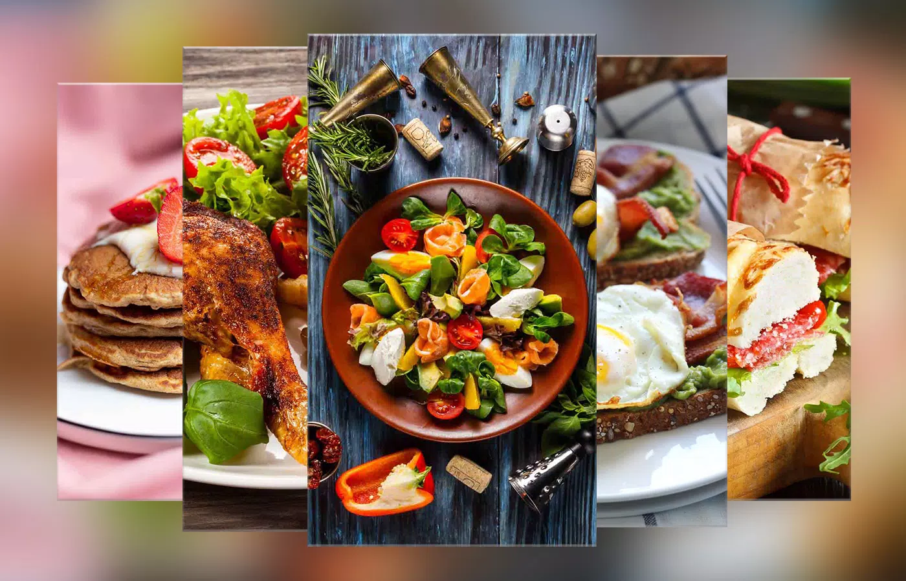
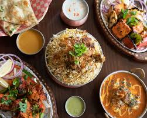
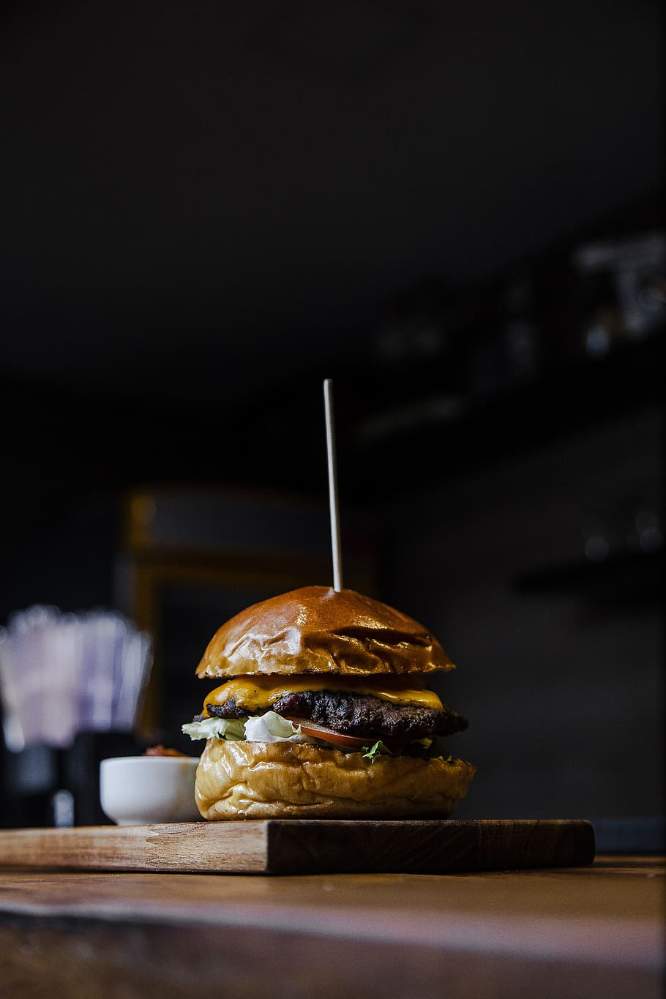
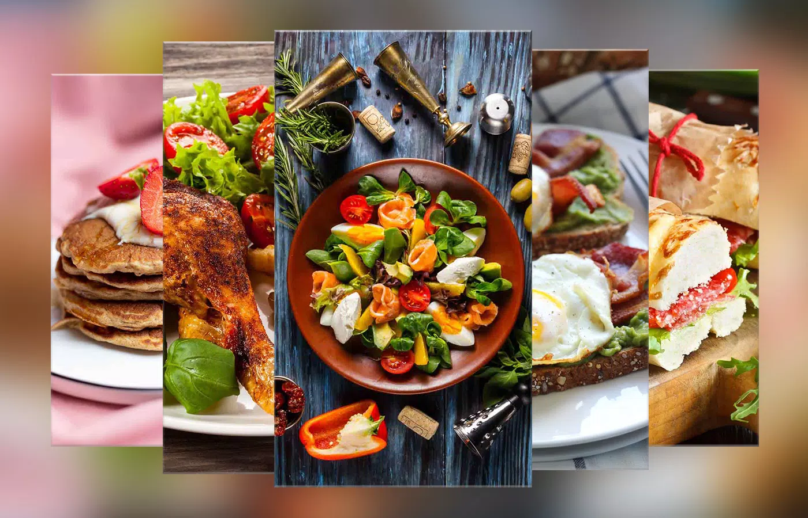
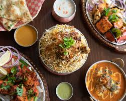
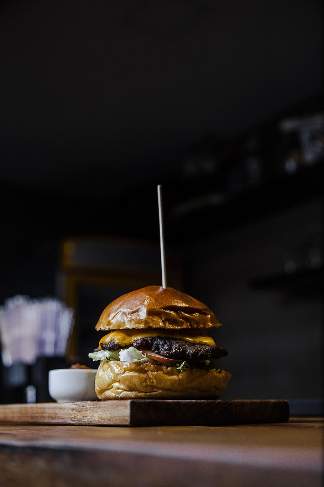
We have the Seafood paella, from Spain, The sea is lapping just by your feet, a warm breeze whips the tablecloth around your legs and a steamy pan of paella sits in front of you. Shrimp, lobster, mussels and cuttlefish combine with white rice and various herbs, oil and salt in this Valencian dish to send you immediately into holiday mode. Though if you have it in Spain, you're probably there already.
Chicken parm, Australia, Melted Parmesan and mozzarella cheese, and a peppery, garlicky tomato sauce drizzled over the top of a chicken fillet -- Aussie pub-goers claim this ostensibly Italian dish as their own. Since they make it so well, there's no point in arguing.
Chili crab, Singapore, You can't visit Singapore without trying its spicy, sloppy, meaty specialty. While there are dozens of ways to prepare crab (with black pepper, salted egg yolk, cheese-baked, et cetera) chili crab remains the local bestseller. Spicy chili-tomato gravy tends to splatter, which is why you need to mop everything up with mini mantou buns.
Some of the Best Desserts from all over the world

 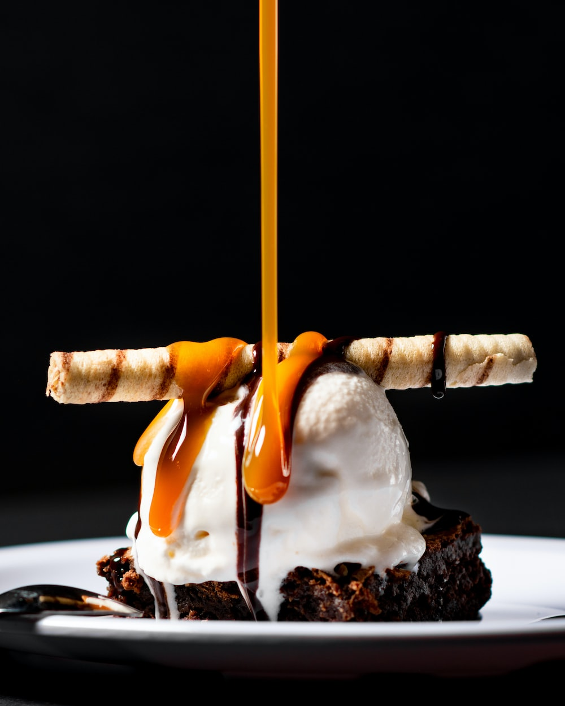
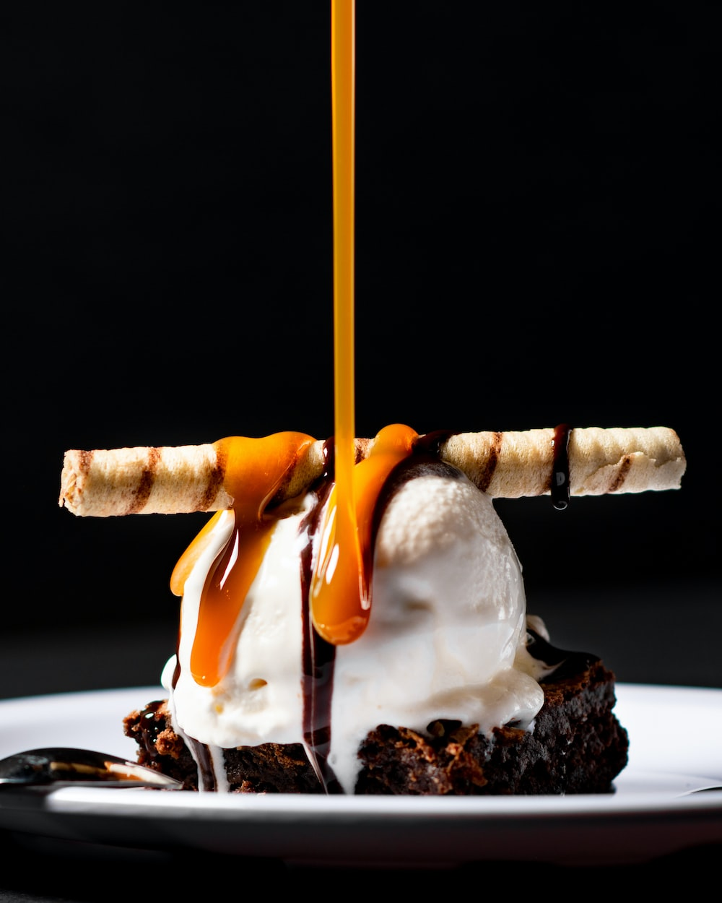
 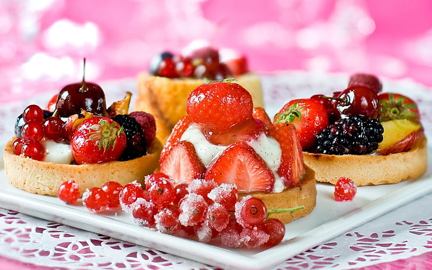
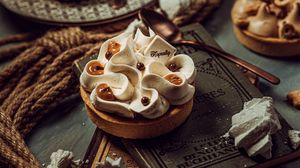
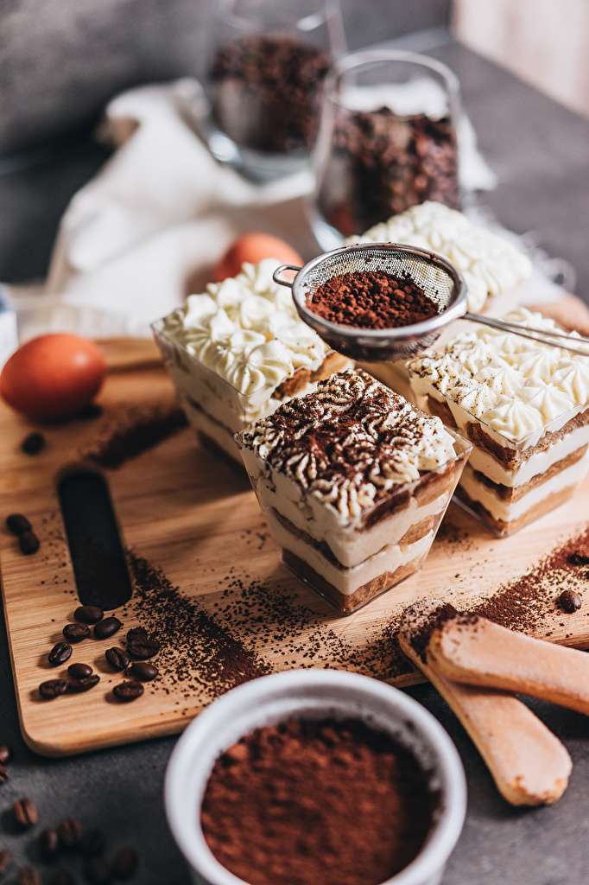
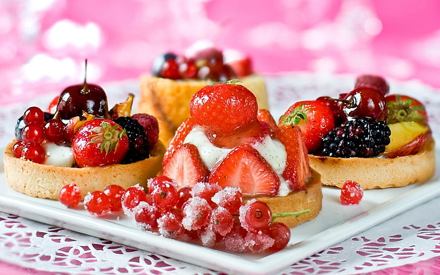
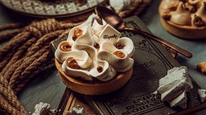
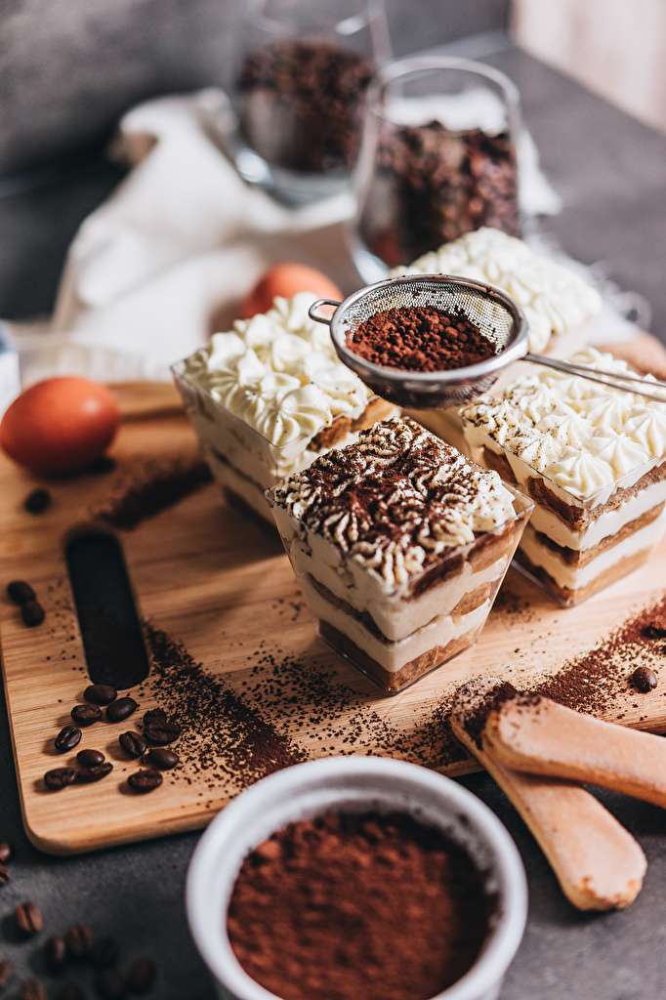
We have Apfelstrudel, Austria, For a floury lesson in gluten's architectural wonders, whip up a batch of traditional strudel dough. The real thing is stretched -- not rolled -- into an improbably thin sheet; according to legend, it should be transparent enough to read a newspaper through.
Borma, Middle East and Turkey, Threads of crisp, golden knafeh dough wrap around a rich nut filling in this sweet dessert, which is an elegant and aromatic relative of baklava. Unlike baklava, borma is often fried, adding an extra infusion of flavor and a crisp texture that stands up to a sugary bath in flavored syrup.
Cornes de Gazelle, Morocco, Even in a crowded field of tempting Moroccan sweets, these filled pastries are perennial favorites, and the labor-intensive dessert appears at celebrations and special meals throughout the year.
Some of the Best Drinks from all over the world
We have Absinthe, Believed to have been first distilled in Switzerland and infamous for being around 80% proof, "la fée verte", or ‘little fairy’ is one of the most talked-about spirits in existence, mostly because it has been banned in many countries for its potency.
Coquito, This Puerto Rican beverage is a must for rum and coconut lovers and is made with sweetened milk, like eggnog.
Gin, Known as an English drink, gin is made from juniper berries and is one of the most versatile spirits around as it can be enjoyed neat, in tonic or water, or as part of a cocktail.